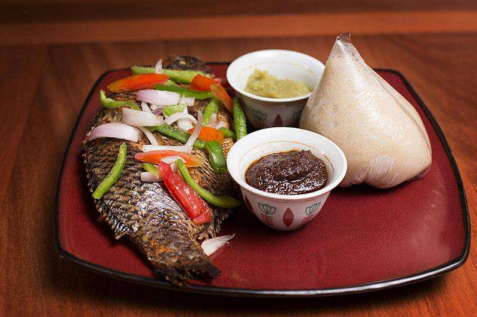

Ghanaian Banku and Tilapia

Ingredients:
For the Banku:
- 2 cups fermented corn dough
- 1 cup cassava dough
- Water as needed
- Salt to taste
For the Tilapia:
- 2 whole tilapia, cleaned and scaled
- 1 teaspoon garlic paste
- 1 teaspoon ginger paste
- 1 teaspoon chili pepper
- 1 teaspoon anise (optional)
- Salt to taste
- Lemon juice from 1 lemon
- Oil for frying
For the Pepper Sauce:
- 2 tomatoes
- 1 onion
- 1 clove garlic
- 1 hot pepper (Scotch bonnet or habanero)
- Salt to taste
Instructions:
For the Banku:
- Mix the fermented corn dough with water to a thick, smooth paste.
- Add the cassava dough and mix thoroughly.
- Cook over medium heat, stirring constantly to prevent lumps, until the mixture thickens and cooks through.
- Add salt to taste and continue cooking until the banku becomes firm and elastic.
- Shape the banku into serving-sized balls and set aside.
For the Tilapia:
- Marinate the tilapia with garlic, ginger, chili pepper, anise, salt, and lemon juice for at least 30 minutes.
- Heat oil in a frying pan and fry the tilapia until golden brown and cooked through.
- Alternatively, grill the tilapia for a healthier option.
For the Pepper Sauce:
- Blend the tomatoes, onion, garlic, and hot pepper with a little water to a smooth consistency.
- Pour the mixture into a saucepan, add salt to taste, and simmer until it thickens.
To Serve:
- Place a ball of banku on each plate, with a piece of tilapia alongside.
- Serve with the pepper sauce and additional raw vegetables if desired.